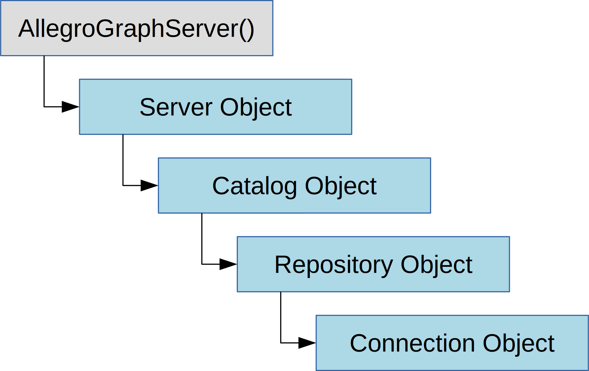

Example 1: Creating a repository and triple indices¶
Listing catalogs¶
The first task is to attach to our AllegroGraph Server and open a repository. To achieve this we build a chain of Python objects, ending in a “connection” object that lets us manipulate triples in a specific repository. The overall process of generating the connection object follows this diagram:
The first example opens (or creates) a repository by building a series of client-side objects, culminating in a “connection” object. The connection object contains the methods that let us manipulate triples in a specific repository. |
 |
{kind=link}
Before we start, we will extract the location of the AG server from environment variables
import os
AGRAPH_HOST = os.environ.get('AGRAPH_HOST')
AGRAPH_PORT = int(os.environ.get('AGRAPH_PORT', '10035'))
AGRAPH_USER = os.environ.get('AGRAPH_USER')
AGRAPH_PASSWORD = os.environ.get('AGRAPH_PASSWORD')
AllegroGraph connection functions use these environment variables as defaults, but we will pass the values explicitly to illustrate how to specify connection parameters in Python.
The example first connects to an AllegroGraph Server by providing the
endpoint (host IP address and port number) of an already-launched
AllegroGraph server. This creates a client-side server object, which can
access the AllegroGraph server’s list of available catalogs through the
listCatalogs() method. Note that the name of the root catalog
will be represented by None:
from franz.openrdf.sail.allegrographserver import AllegroGraphServer
print("Connecting to AllegroGraph server --",
"host:'%s' port:%s" % (AGRAPH_HOST, AGRAPH_PORT))
server = AllegroGraphServer(AGRAPH_HOST, AGRAPH_PORT,
AGRAPH_USER, AGRAPH_PASSWORD)
print("Available catalogs:")
for cat_name in server.listCatalogs():
if cat_name is None:
print(' - <root catalog>')
else:
print(' - ' + str(cat_name))
This is the output so far:
Connecting to AllegroGraph server -- host:'...
Available catalogs:
- <root catalog>
...
This output says that the server has the root catalog and possibly also some other catalogs that someone has created for some experimentation.
Listing repositories¶
In the next part of this example, we use the openCatalog()
method to create a client-side catalog object. In this example we will
connect to the root catalog. When we look inside that catalog, we can
see which repositories are available:
catalog = server.openCatalog('')
print("Available repositories in catalog '%s':" % catalog.getName())
for repo_name in catalog.listRepositories():
print(' - ' + repo_name)
The corresponding output lists the available repositories. When you run the examples, you may see a different list of repositories.
Available repositories in catalog 'None':
- pythontutorial
- greenthings
- redthings
Creating repositories¶
The next step is to create a client-side repository object representing
the respository we wish to open, by calling the getRepository()
method of the catalog object. We have to provide the name of the desired
repository ('python-tutorial'), and select one of four access modes:
Repository.RENEWclears the contents of an existing repository before opening. If the indicated repository does not exist, it creates one.Repository.OPENopens an existing repository, or throws an exception if the repository is not found.Repository.ACCESSopens an existing repository, or creates a new one if the repository is not found.Repository.CREATEcreates a new repository, or throws an exception if one by that name already exists.
from franz.openrdf.repository.repository import Repository
mode = Repository.RENEW
my_repository = catalog.getRepository('python-tutorial', mode)
my_repository.initialize()
A new or renewed repository must be initialized, using the
initialize() method of the repository object.
Connecting to a repository¶
The goal of all this object-building has been to create a client-side
connection object, whose methods let us manipulate the triples of the
repository. The repository object’s getConnection() method
returns this connection object.
conn = my_repository.getConnection()
print('Repository %s is up!' % my_repository.getDatabaseName())
print('It contains %d statement(s).' % conn.size())
The size() method of the connection object returns how many
triples are present. In the example1() function, this number
will always be zero because we “renewed” the repository.
This is the output so far:
Repository python-tutorial is up!
It contains 0 statement(s).
Managing indices¶
Whenever you create a new repository, you should stop to consider which kinds of triple indices you will need. This is an important efficiency decision. AllegroGraph uses a set of sorted indices to quickly identify a contiguous range of triples that are likely to match a specific query pattern.
These indices are identified by names that describe their organization. The default set of indices are called spogi, posgi, ospgi, gspoi, gposi, gospi, and i , where:
- S stands for the subject URI.
- P stands for the predicate URI.
- O stands for the object URI or literal.
- G stands for the graph URI.
- I stands for the triple identifier (its unique id number within the triple store).
The order of the letters denotes how the index has been organized. For instance, the spogi index contains all of the triples in the store, sorted first by subject, then by predicate, then by object, and finally by graph. The triple id number is present as a fifth column in the index. If you know the URI of a desired resource (the subject value of the query pattern), then the spogi index lets you quickly locate and retrieve all triples with that subject.
The idea is to provide your respository with the indices that your queries will need, and to avoid maintaining indices that you will never need.
We can use the connection object’s listValidIndices() method to
examine the list of all possible AllegroGraph triple indices:
indices = conn.listValidIndices()
group_size = 5
print('All valid triple indices:')
for offset in range(0, len(indices), group_size):
group = indices[offset:offset + group_size]
print(' ', ' '.join(group))
This is the list of all possible valid indices:
All valid triple indices:
spogi spgoi sopgi sogpi sgpoi
sgopi psogi psgoi posgi pogsi
pgsoi pgosi ospgi osgpi opsgi
opgsi ogspi ogpsi gspoi gsopi
gpsoi gposi gospi gopsi i
AllegroGraph can generate any of these indices if you need them, but it
creates only seven indices by default. We can see the current indices
by using the connection object’s listIndices() method:
indices = conn.listIndices()
print('Current triple indices:', ', '.join(indices))
There are currently seven indices
Current triple indices: i, gospi, gposi, gspoi, ospgi, posgi, spogi
The indices that begin with “g” are sorted primarily by subgraph (or
“context”). If your application does not use subgraphs, you should
consider removing these indices from the repository. You don’t want to
build and maintain triple indices that your application will never use.
This wastes CPU time and disk space. The connection object has a
convenient dropIndex() method:
print("Removing graph indices...")
conn.dropIndex("gospi")
conn.dropIndex("gposi")
conn.dropIndex("gspoi")
indices = conn.listIndices()
print('Current triple indices:', ', '.join(indices))
Having dropped three of the triple indices, there are now four remaining:
Removing graph indices...
Current triple indices: i, ospgi, posgi, spogi
The i index is for deleting triples by using the triple id number. It is also required for free text indexing. The ospgi index is sorted primarily by object value, which makes it possible to efficiently retrieve a range of object values from the index. Similarly, the posgi index lets us quickly reach for a triples that all share the same predicate. We mentioned previously that the spogi index speeds up the retrieval of triples that all have the same subject URI.
As it happens, we may have been overly hasty in eliminating all of the
graph indices. AllegroGraph can find the right matches as long as there
is any one index present, but using the “right” index is much faster.
Let’s put one of the graph indices back, just in case we need it. We’ll
use the connection object’s addIndex() method:
print("Adding one graph index back in...")
conn.addIndex("gspoi")
indices = conn.listIndices()
print('Current triple indices:', ', '.join(indices))
Adding one graph index back in...
Current triple indices: i, gspoi, ospgi, posgi, spogi
Releasing resources¶
Both the connection and the repository object must be closed to
release resources once they are no longer needed. We can use the
shutDown() and close()
methods to do this:
conn.close()
my_repository.shutDown()
It is safer and more convenient to ensure that the resources are
released by using the with statement:
with catalog.getRepository('python-tutorial', Repository.OPEN) as repo:
# Note: an explicit call to initialize() is not required
# when using the `with` statement.
with repo.getConnection() as conn:
print('Statements:', conn.size())
Statements: 0
Utility functions¶
Creating the intermediate server, catalog and repository objects can
be tedious when the only thing required is a single connection to one
repository. In such circumstances it might be more convenient to use
the ag_connect() function. That is what we will do in further
examples. Here is a brief example of using ag_connect()
from franz.openrdf.connect import ag_connect
with ag_connect('python-tutorial', create=True, clear=True) as conn:
print('Statements:', conn.size())
This function take care of creating all required objects and the
returned context manager ensures that all necessary initialization
steps are taken and no resources are leaked. The create and
clear arguments ensure that the repository is empty and that it is
created if necessary.
Statements: 0